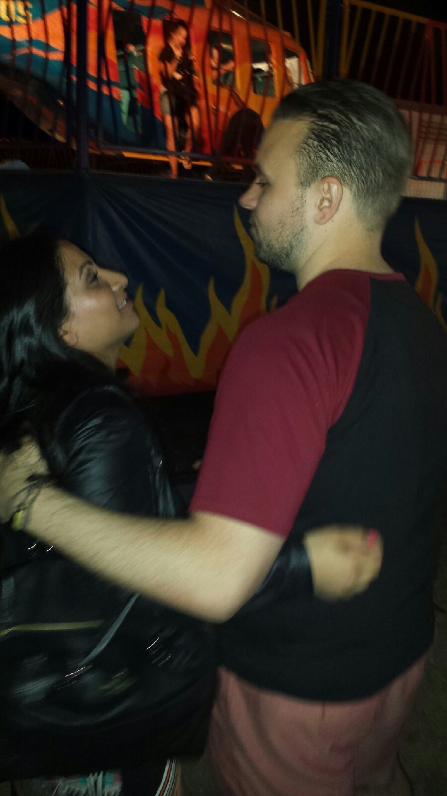
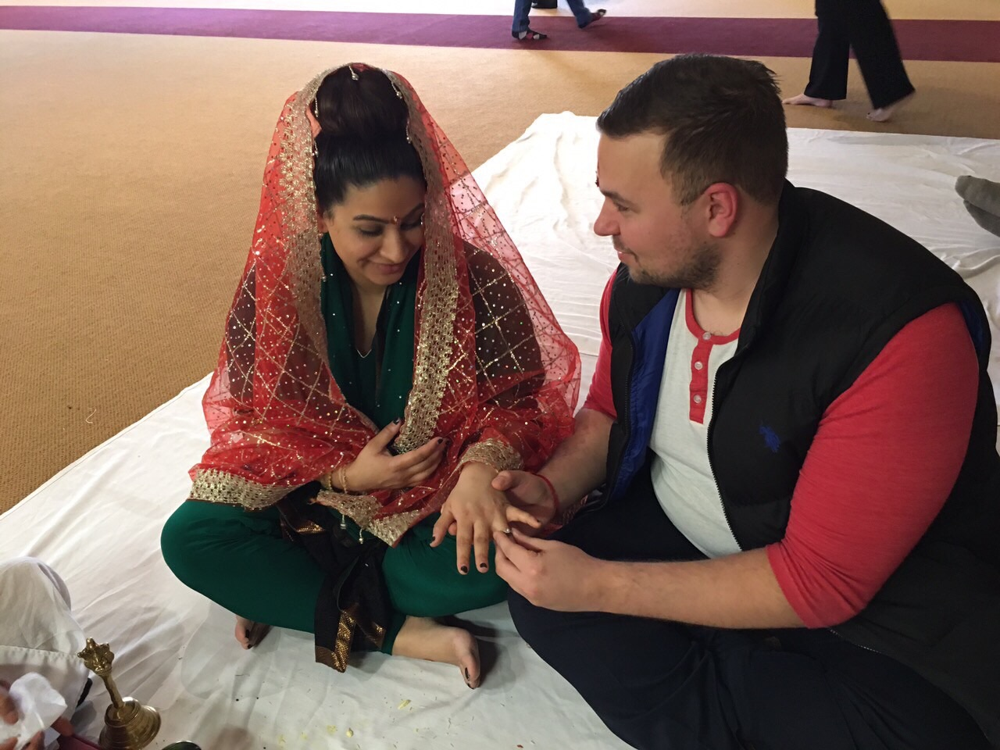
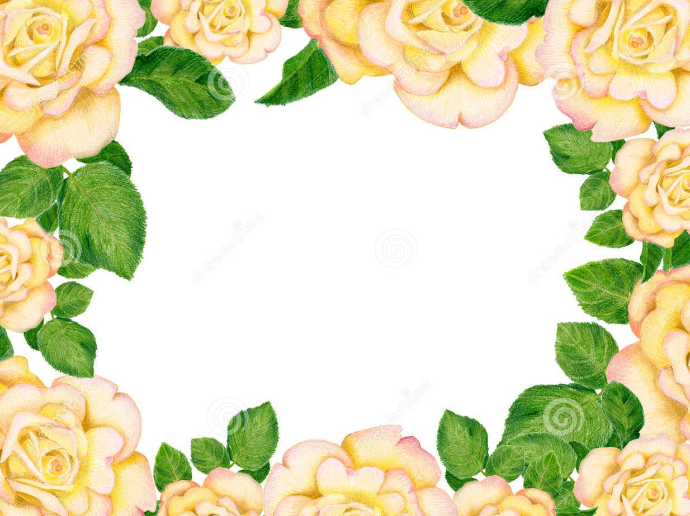
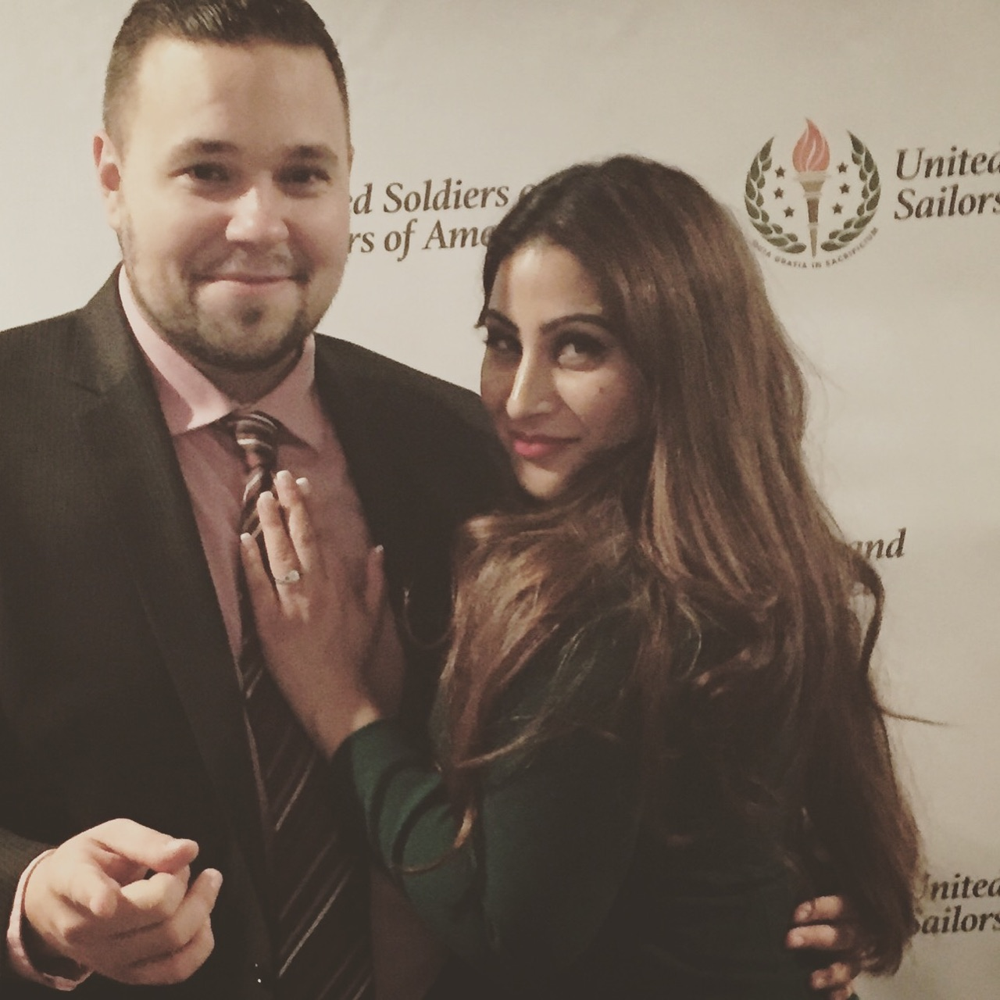
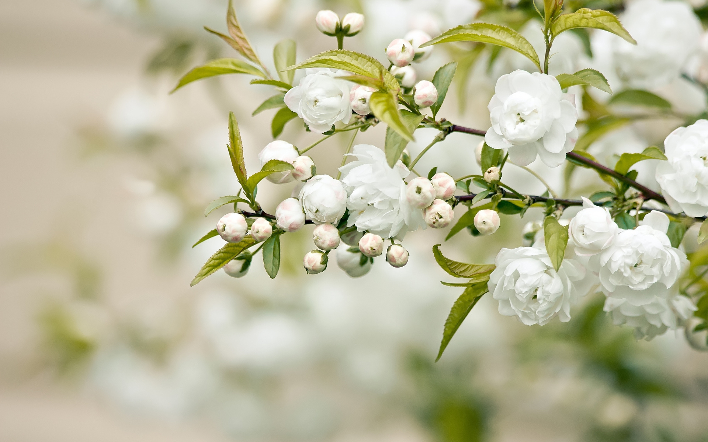

Sangeet
Hotel Syracuse anchors the first night of the wedding weekend.
Throwaway prototype for the wedding archive. The test uses existing checked-in images only, no uploads, no accounts, no build step, and no backend.
A compact, scan-friendly gallery page. Best when the goal is to show many photos with minimal ceremony.






A stronger first impression for a small archive: one large emotional image, then supporting photos beside it.


Best if each photo should carry a short memory or context note. This makes the gallery feel like part of the archive, not just a media dump.
Hotel Syracuse anchors the first night of the wedding weekend.

A simple card format leaves room for short captions later.

Decorative images can support the memory-site tone without needing a backend.
Variant C best matches the archive/memory-site direction because it turns photos into contextual memories and keeps image count small. Variant A is useful once many final photos exist. Variant B is visually strong but depends heavily on choosing one perfect hero image.